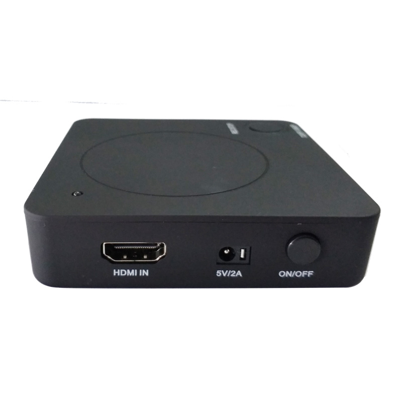
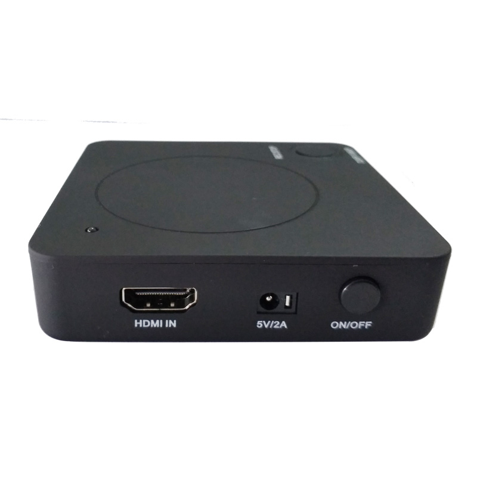

hhemken
I just started making some test scenes in Urho3d for a visualization project.
Sorry to ask such a basic question, but I’ve searched this board and googled a variety of terms, but can’t find the answer:
How do I capture gameplay audio and video from an Urho3d game to a video file on disk?
Thanks for your help and patience!
hhemken


 
